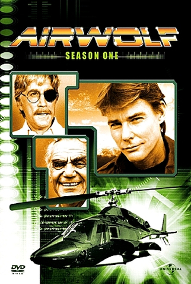

Aguia de Fogo
"AGUIA DE FOGO" fazia parte de uma 'leva' de séries, cujo protagonista não era um ser humano e sim alguma espécie de máquina. Embora algumas destas séries sejam lembradas até hoje, particularmente acho que o fato do protagonista não ser humano limita um pouco o campo de ação do seriado. Por exemplo em "Águia de Fogo" o helicóptero tinha de aparecer de alguma maneira, o que obrigava o episódio a ter algum tipo de perseguição aérea.
Claro que isto (o protagonista não ser humano) acaba por diminuir os custos da produção, pois as cenas do helicóptero 'entrando' em ação só precisavam ser filmadas poucas vezes. Era sempre o piloto e o co-piloto entrando, ligando os rotores, as hélices começam a girar, o aparelho levanta voo e parte...De resto eram cenas dentro do cabine, das armas disparando, o aparelho em voo, etc.

Um Pouco sobre Aguia de Fogo
O que chamava atenção aqui verdadeiramente era a química de quatro personagens bem diferentes membros deste Esquadrão: John ‘Hannibal’ Smith (George Peppard, de Bonequinha de Luxo) era o líder, o experiente veterano; Templeton ‘Faceman’ Peck (Dirk Benedict) – ou Cara de Pau, como diz o nome no Brasil, era o mulherengo que usava seu charme como arma; ‘Howling Mad’ Murdock (Dwight Schultz) – Louco Furioso no Brasil -, era o piloto de aviões e helicópteros da equipe, e o desequilibrado de plantão, também o alívio cômico. Com B.A. (Mr. T) eles formavam o quarteto de renegados. O programa ficou no ar por 5 Temporadas, de 1983 a 1987. Esta foi outra série que rendeu um filme para o cinema. Em 2010, Liam Neeson, Bradley Cooper, Sharlto Copley e Rampage Jackson foram as novas caras dos personagens numa superprodução.
- Temporadas: 4
- Exibição: 1984 a 1987
- Episódios: 80